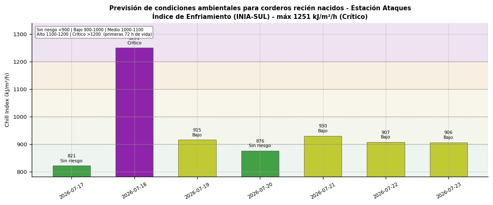
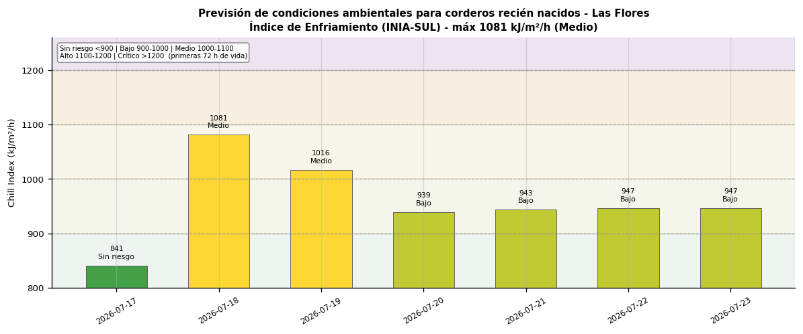
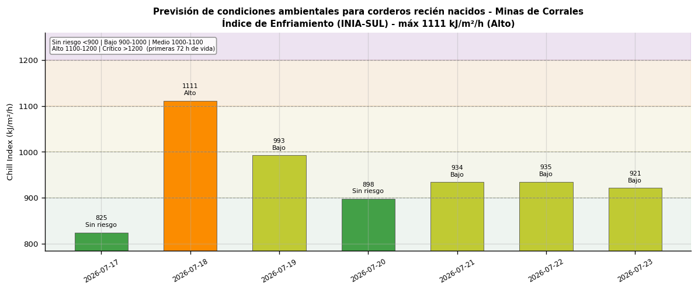
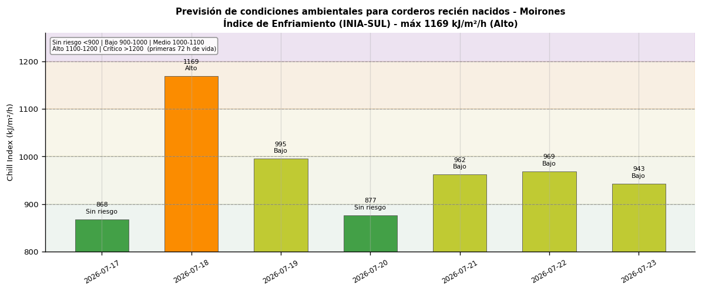
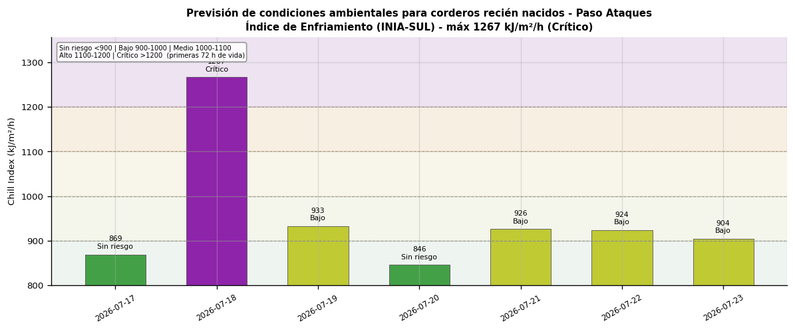
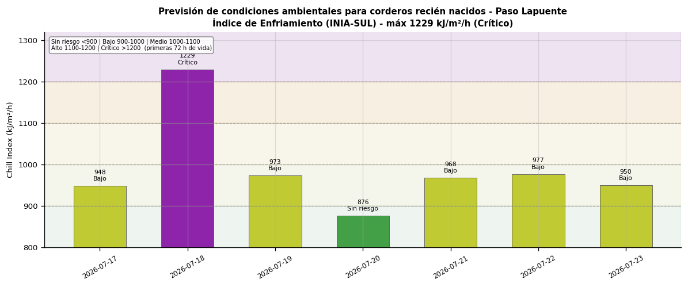
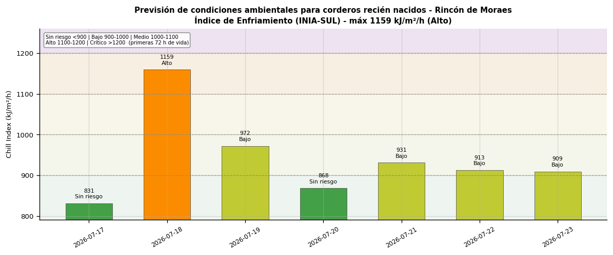
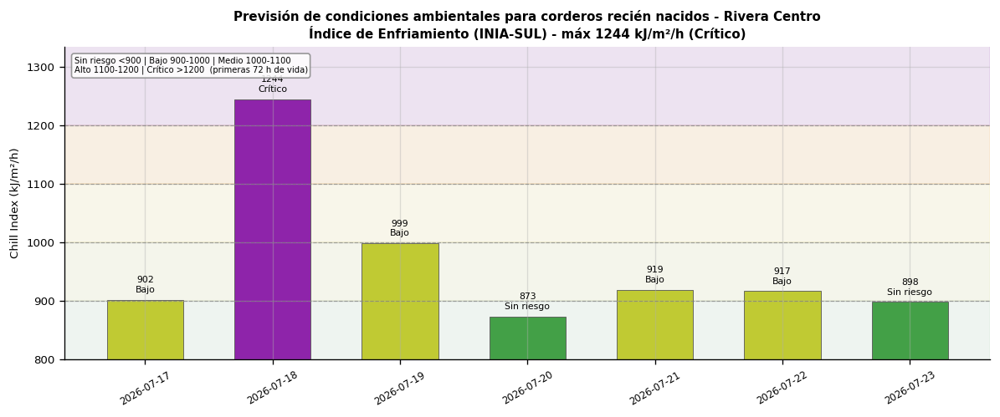
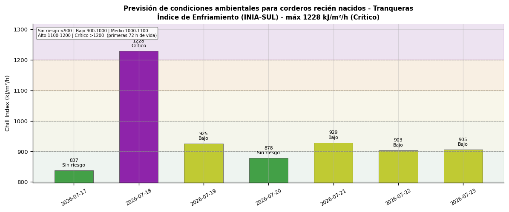
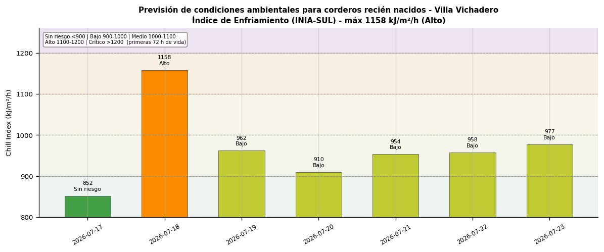

Departamento de Rivera · 2026-07-17
Índice de Enfriamiento (Chill Index) para el riesgo de sobrevivencia de corderos recién nacidos en las primeras 72 horas de vida y de ovinos pos-esquila. Estima la pérdida potencial de calor combinando temperatura, viento y precipitación diarios. Metodología INIA-SUL-FAgro-FVet: Secretariado Uruguayo de la Lana (SUL), Facultades de Agronomía y Veterinaria (UdelaR) e INIA (GRAS). Referencias: Nixon-Smith 1972; Donnelly 1984.
Interpretación: < 900: Sin riesgo (mortalidad < 13%) | 900-1000: Bajo (13-28%) | 1000-1100: Medio (28-51%) | 1100-1200: Alto (51-73%) | > 1200: Crítico (> 73%)
| Día | CI (kJ/m²/h) | Nivel de riesgo |
|---|---|---|
| vie 2026-07-17 | 821 | Sin riesgo |
| sáb 2026-07-18 | 1251 | Crítico |
| dom 2026-07-19 | 915 | Bajo |
| lun 2026-07-20 | 876 | Sin riesgo |
| mar 2026-07-21 | 930 | Bajo |
| mié 2026-07-22 | 907 | Bajo |
| jue 2026-07-23 | 906 | Bajo |

| Día | CI (kJ/m²/h) | Nivel de riesgo |
|---|---|---|
| vie 2026-07-17 | 841 | Sin riesgo |
| sáb 2026-07-18 | 1081 | Medio |
| dom 2026-07-19 | 1016 | Medio |
| lun 2026-07-20 | 939 | Bajo |
| mar 2026-07-21 | 943 | Bajo |
| mié 2026-07-22 | 947 | Bajo |
| jue 2026-07-23 | 947 | Bajo |

| Día | CI (kJ/m²/h) | Nivel de riesgo |
|---|---|---|
| vie 2026-07-17 | 825 | Sin riesgo |
| sáb 2026-07-18 | 1111 | Alto |
| dom 2026-07-19 | 993 | Bajo |
| lun 2026-07-20 | 898 | Sin riesgo |
| mar 2026-07-21 | 934 | Bajo |
| mié 2026-07-22 | 935 | Bajo |
| jue 2026-07-23 | 921 | Bajo |

| Día | CI (kJ/m²/h) | Nivel de riesgo |
|---|---|---|
| vie 2026-07-17 | 868 | Sin riesgo |
| sáb 2026-07-18 | 1169 | Alto |
| dom 2026-07-19 | 995 | Bajo |
| lun 2026-07-20 | 877 | Sin riesgo |
| mar 2026-07-21 | 962 | Bajo |
| mié 2026-07-22 | 969 | Bajo |
| jue 2026-07-23 | 943 | Bajo |

| Día | CI (kJ/m²/h) | Nivel de riesgo |
|---|---|---|
| vie 2026-07-17 | 869 | Sin riesgo |
| sáb 2026-07-18 | 1267 | Crítico |
| dom 2026-07-19 | 933 | Bajo |
| lun 2026-07-20 | 846 | Sin riesgo |
| mar 2026-07-21 | 926 | Bajo |
| mié 2026-07-22 | 924 | Bajo |
| jue 2026-07-23 | 904 | Bajo |

| Día | CI (kJ/m²/h) | Nivel de riesgo |
|---|---|---|
| vie 2026-07-17 | 948 | Bajo |
| sáb 2026-07-18 | 1229 | Crítico |
| dom 2026-07-19 | 973 | Bajo |
| lun 2026-07-20 | 876 | Sin riesgo |
| mar 2026-07-21 | 968 | Bajo |
| mié 2026-07-22 | 977 | Bajo |
| jue 2026-07-23 | 950 | Bajo |

| Día | CI (kJ/m²/h) | Nivel de riesgo |
|---|---|---|
| vie 2026-07-17 | 831 | Sin riesgo |
| sáb 2026-07-18 | 1159 | Alto |
| dom 2026-07-19 | 972 | Bajo |
| lun 2026-07-20 | 868 | Sin riesgo |
| mar 2026-07-21 | 931 | Bajo |
| mié 2026-07-22 | 913 | Bajo |
| jue 2026-07-23 | 909 | Bajo |

| Día | CI (kJ/m²/h) | Nivel de riesgo |
|---|---|---|
| vie 2026-07-17 | 902 | Bajo |
| sáb 2026-07-18 | 1244 | Crítico |
| dom 2026-07-19 | 999 | Bajo |
| lun 2026-07-20 | 873 | Sin riesgo |
| mar 2026-07-21 | 919 | Bajo |
| mié 2026-07-22 | 917 | Bajo |
| jue 2026-07-23 | 898 | Sin riesgo |

| Día | CI (kJ/m²/h) | Nivel de riesgo |
|---|---|---|
| vie 2026-07-17 | 837 | Sin riesgo |
| sáb 2026-07-18 | 1228 | Crítico |
| dom 2026-07-19 | 925 | Bajo |
| lun 2026-07-20 | 878 | Sin riesgo |
| mar 2026-07-21 | 929 | Bajo |
| mié 2026-07-22 | 903 | Bajo |
| jue 2026-07-23 | 905 | Bajo |

| Día | CI (kJ/m²/h) | Nivel de riesgo |
|---|---|---|
| vie 2026-07-17 | 852 | Sin riesgo |
| sáb 2026-07-18 | 1158 | Alto |
| dom 2026-07-19 | 962 | Bajo |
| lun 2026-07-20 | 910 | Bajo |
| mar 2026-07-21 | 954 | Bajo |
| mié 2026-07-22 | 958 | Bajo |
| jue 2026-07-23 | 977 | Bajo |
